── Attaching core tidyverse packages ──────────────────────── tidyverse 2.0.0 ──
✔ dplyr 1.1.4 ✔ readr 2.1.5
✔ forcats 1.0.0 ✔ stringr 1.5.1
✔ ggplot2 4.0.0 ✔ tibble 3.2.1
✔ lubridate 1.9.3 ✔ tidyr 1.3.1
✔ purrr 1.0.2
── Conflicts ────────────────────────────────────────── tidyverse_conflicts() ──
✖ dplyr::filter() masks stats::filter()
✖ dplyr::lag() masks stats::lag()
ℹ Use the conflicted package (<http://conflicted.r-lib.org/>) to force all conflicts to become errorsConfidence Intervals
PSYC 2020-A01 / PSYC 6022-A01 | 2025-10-17 | Lab 9
Outline
- Assignment 8 Review
- Confidence Intervals
- One-Sample t-test
Learning objectives:
R: CI and t-statistics in R
Assignment 8 Review
Two ways to approach two-tailed p-values
Conceptually: split your alpha onto either side of the distribution
Technically test each side (both positive and negative cutoff), but know that e.g., negative z-value isn’t going to beat the positive cutoff
Compare against split alpha (2.5%, p = .025) on either side.
pnorm(-1.7)[1] 0.04456546Fine for just reject / retain decisions (if compare it against correct alpha)
To report the p-value specifically for the entire test, would need to multiply by 2.
pnorm(-1.7)*2[1] 0.08913093Account for probability of being more extreme in both directions
Assignment 8 Review
Remember to check the correct tail of the distribution
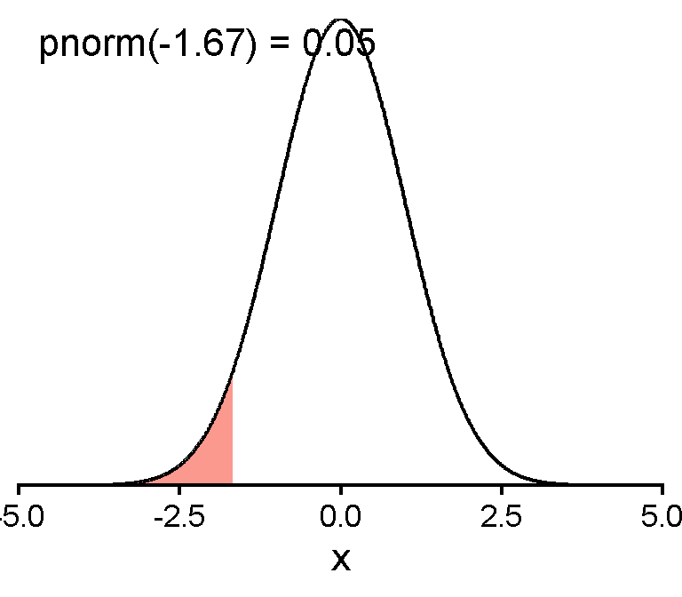
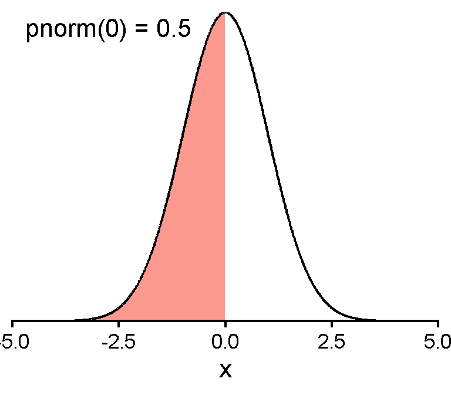
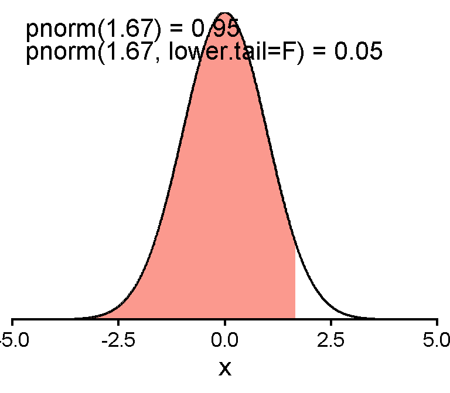
Confidence Intervals
Confidence Intervals
Most common: 95% CI
○ Interpretation: If you were to take 100 samples, 95 CIs of your 100 samples will contain the true mean
For standard normal,
| CI | z cutoff | generally |
|---|---|---|
| 99.7% | [-3, 3] | [\(\bar{x} - 3 * SD\), \(\bar{x} + 3 * SD\)] |
| 95% | [-1.96, 1.96] | [\(\bar{x} - 1.96 * SD\), \(\bar{x} + 1.96 * SD\)] |
| 68% | [-1, 1] | [\(\bar{x} - 1 * SD\), \(\bar{x} + 1 * SD\)] |
Confidence Interval and Width
Confidence Level (\(1 - \alpha\)) can communicate uncertainty about your results
○ Designated proportion of such intervals that will include the true population value
○ \(\alpha =\) 0.01 for 99% CI
○ \(\alpha =\) 0.05 for 95% CI
Confidence level proportional to confidence interval width

CIs for Symmetric Distributions
When a distribution is symmetric, CIs for that distribution are also symmetric
○ Includes normal (e.g., z-) distribution
○ t distribution

Cutoff Z-Values Example
Say you want to find the cutoff z values for some confidence interval
Two examples: 95% CI and 97.3% CI (one typical, one as exercise)
We want the \(\alpha = 1 -\) confidence level piece to be equal on both sides
95% CI
\(\alpha = 1 - .95 = 5\%\) on both sides
So \(.05 / 2 = .025\) on each side
Need value for \(.025\) and \(.95 + .025\) (\([.025, .975]\))
qnorm(c(.025, .975))[1] -1.959964 1.95996497.3% CI
\(\alpha = 1 - .973 = 2.7\%\) on both sides
So \(.027 / 2 = .0135\) on each side
Need value for \(.0135\) and \(.95 + .0135\) (\([.0135, .9865]\))
qnorm(c(.0135, 0.9865))[1] -2.211518 2.211518Which one has a higher confidence level? Which one has a larger width?
Cutoff Z-Values Example
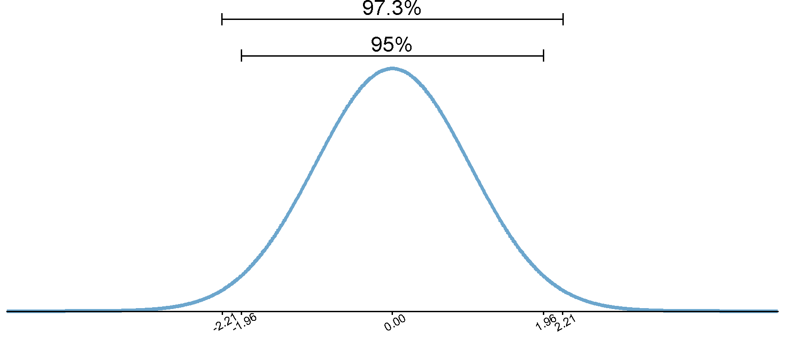
data.frame(x = seq(-5, 5, length.out = 1000)) |>
mutate(y = dnorm(x)) |>
ggplot(aes(x = x, y = y)) +
geom_line(linewidth = 1.5, color = "skyblue3") +
annotate("errorbar", xmin = qnorm(c((1 - .973) / 2)), xmax = qnorm((1 - .973) / 2 + .973),
y = .48, width = .02) +
annotate("text", label = "97.3%", y = .48, x = 0, vjust = -.3, size = 6) +
annotate("errorbar", xmin = qnorm(c((1 - .95) / 2)), xmax = qnorm((1 - .95) / 2 + .95),
y = .42, width = .02) +
annotate("text", label = "95%", y = .42, x = 0, vjust = -.3, size = 6) +
scale_x_continuous(breaks = c(qnorm(c((1 - .973) / 2)), qnorm(c((1 - .95) / 2)),
0,
qnorm(c((1 - .95) / 2) + .95), qnorm((1 - .973) / 2 + .973)) |>
round(2)) +
coord_cartesian(clip = "off", ylim = c(0, .5), xlim = c(-5, 5), expand = F) +
guides(y = "none") +
labs(x = NULL, y = NULL) +
theme_classic(base_size = 10) +
theme(axis.text.x = element_text(angle = 30)) Confidence Interval Generally
Derived with sample mean (\(\bar{x}\)) and standard error (\(\frac{s}{\sqrt n}\))
\(CI = \bar{x} \pm z \frac{s}{\sqrt n}\) or
\(CI = [\bar{x} - z \frac{s}{\sqrt n}, \bar{x} + z \frac{s}{\sqrt n}]\)
Food for Thought
With this formula, we would only use the positive version of the z cutoff, so that the lower bound ends up lower than the mean and the higher bound ends up higher. You can also think instead as both adding the z cutoff—it just ends up becoming a minus sign because the lower bound has a negative z cutoff.
Confidence Interval Example
Let’s find a 95% confidence interval of the mean for iris Petal Length
head(iris$Petal.Length)[1] 1.4 1.4 1.3 1.5 1.4 1.7x_bar <- mean(iris$Petal.Length)
x_sd <- sd(iris$Petal.Length)
n <- length(iris$Petal.Length) # although remember to be thinking about missing data
z_cutoff <- qnorm(.975)
Petal.Length.CI <- c(x_bar - z_cutoff * x_sd / sqrt(n), x_bar + z_cutoff * x_sd / sqrt(n))
Petal.Length.CI[1] 3.475499 4.040501If we collected samples of petal length many times, we would expect the interval [3.47, 4.04] to contain the true population mean of petal length 95% of the time.
Confidence Interval Example
Let’s find a 80% confidence interval of the mean for iris Sepal Length
head(iris$Sepal.Length)[1] 5.1 4.9 4.7 4.6 5.0 5.4Sepal.Length.CI <- c(mean(iris$Sepal.Length) - qnorm(.9) * sd(iris$Sepal.Length) /
sqrt(sum(!is.na(iris$Sepal.Length))),
mean(iris$Sepal.Length) + qnorm(.9) * sd(iris$Sepal.Length) /
sqrt(sum(!is.na(iris$Sepal.Length))))
Sepal.Length.CI[1] 5.756686 5.929981If we collected samples of sepal length many times, we would expect the interval [3.57, 3.94] to contain the true population mean of petal length 80% of the time.
Confidence Intervals and NHST
If a 95% confidence interval does not contain a value, that is mathematically equivalent to it being “significantly different” from that value.
E.g., if your null hypothesis \(H_0\) was that the mean of petal length is no different from an expected population mean of 3.3, would you reject or retain the null hypothesis?
Petal.Length.CI[1] 3.475499 4.040501We would reject the null hypothesis because the 95% CI does not include 3.3.
From Z to T: No longer normal
Z- vs. T-Distribution
T-distribution has thicker tails
As df increases, it looks more like a standard normal distribution
With df = \(\infty\), exactly follows a normal distribution (so approximates with large df)
Z- vs. T-Distribution
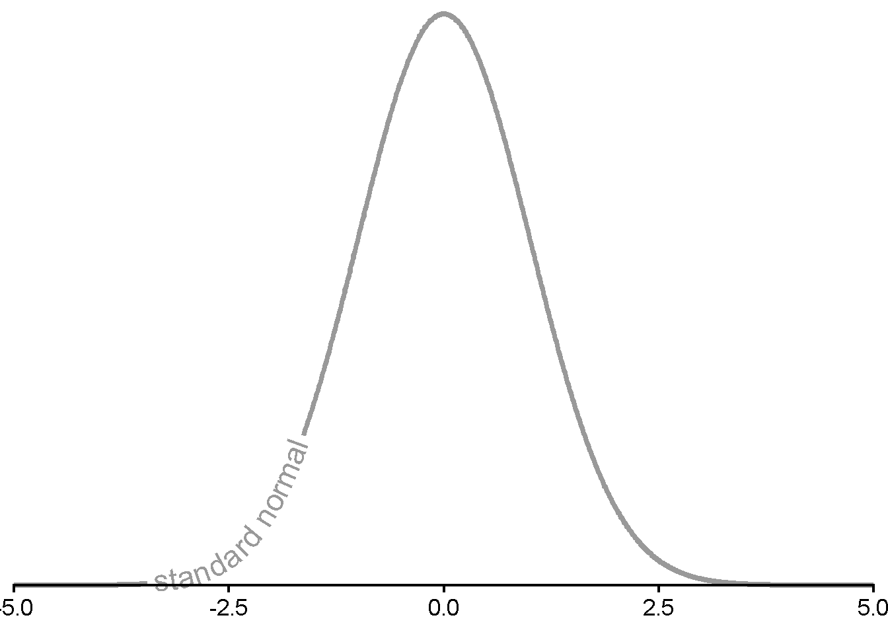
Z- vs. T-Distribution
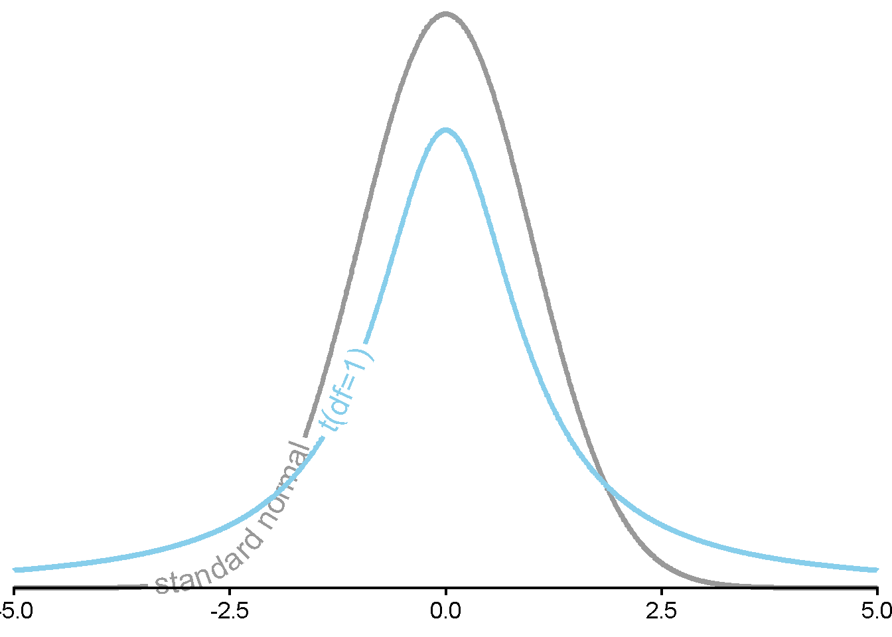
Z- vs. T-Distribution
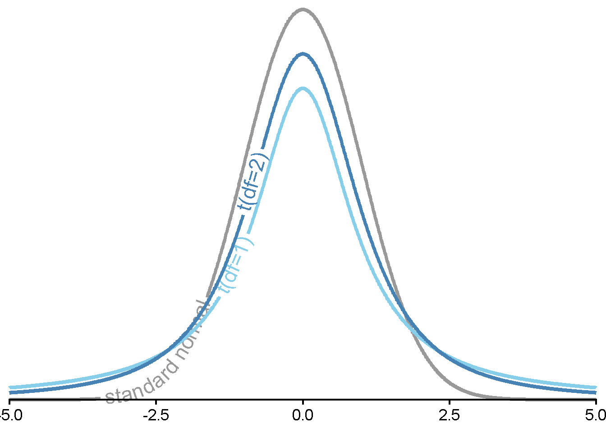
Z- vs. T-Distribution
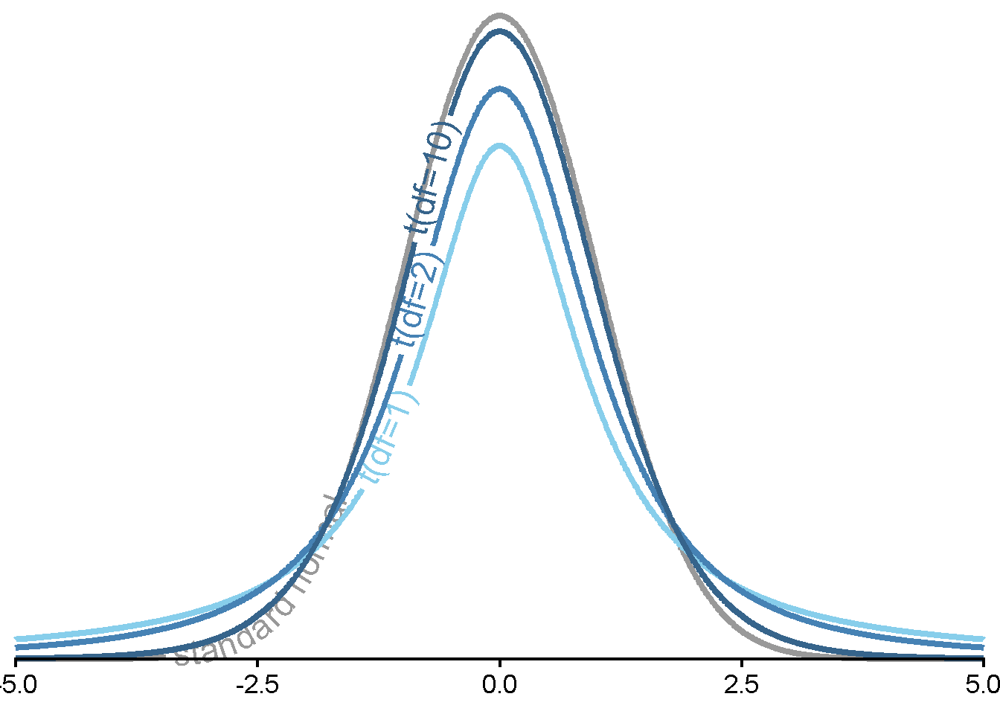
Z- vs. T-Distribution
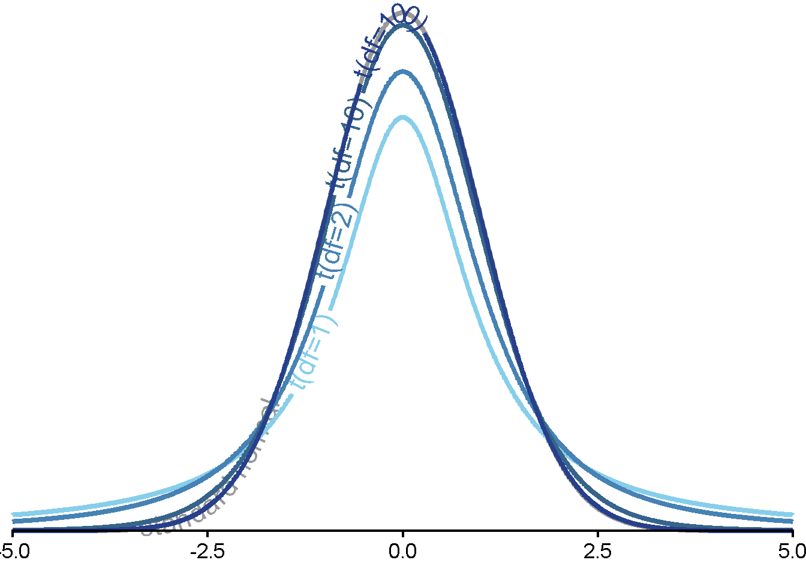
T-Test: How many tails?
Need to consider whether to use a “one-tail” or “two-tail” t-test.
One-Tail (One-Sided)
We want to test whether something is lower or higher than a value, but not both
Only one limit
Two-Tails (Two-Sided)
We want to test whether something is either lower or higher than a value
Two limits
Testing: How many tails?
Need to consider whether to use a “one-tail” or “two-tail” t-test.
One-Tail (One-Sided)
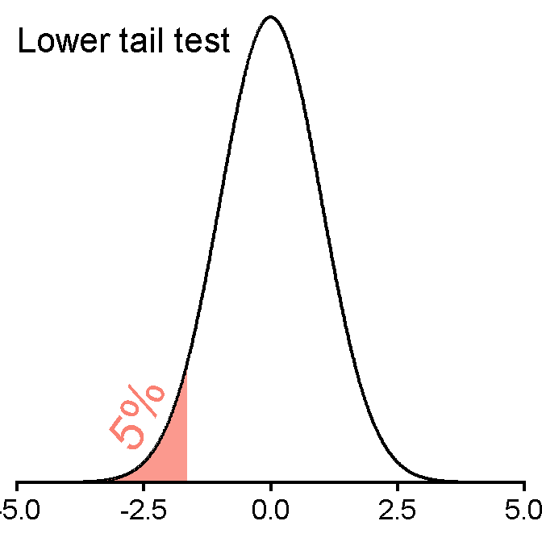
Two-Tails (Two-Sided)
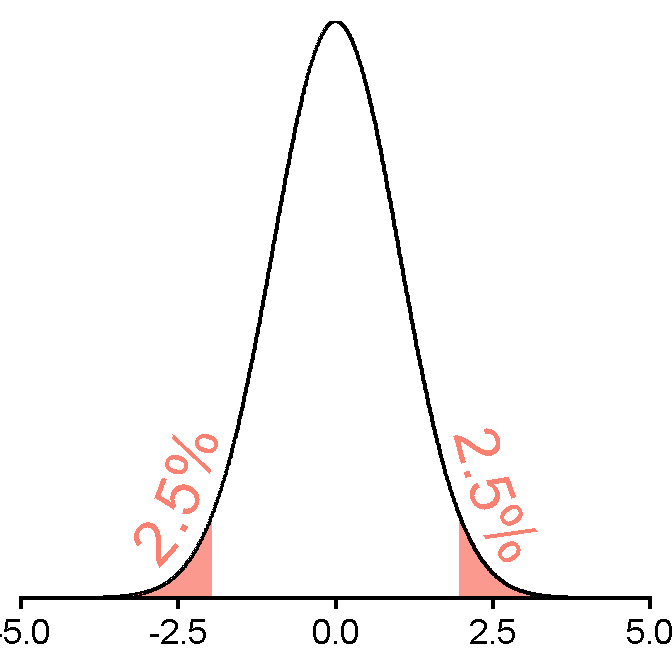
Testing: How many tails?
Notice that two-tailed tests are harder to “beat.”
Warning in geomtextpath::geom_textvline(aes(xintercept = qnorm(0.025), label = "2.5% cutoff"), : All aesthetics have length 1, but the data has 1000 rows.
ℹ Please consider using `annotate()` or provide this layer with data containing
a single row.Warning in geomtextpath::geom_textvline(aes(xintercept = qnorm(0.05), label = "5% cutoff"), : All aesthetics have length 1, but the data has 1000 rows.
ℹ Please consider using `annotate()` or provide this layer with data containing
a single row.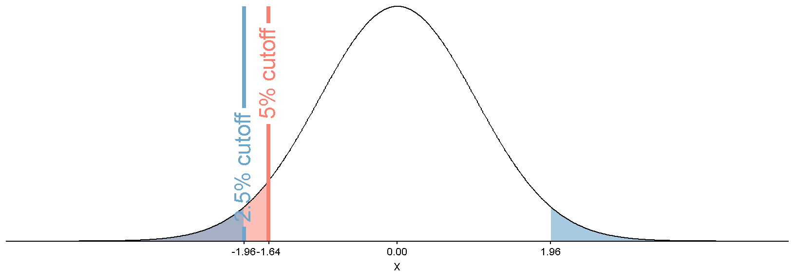
One-Sample T-Test Generally
Asks “is there a question between our sample and the population?”
Derived with sample mean (\(\bar{x}\)), population mean (\(\mu\)), and standard error (\(\frac{s}{\sqrt n}\))
\[t = \frac{\bar{x} - \mu}{\frac{s}{\sqrt{n}}}\]
With a t-test, we don’t have a known population SD (\(\sigma\)), so we use the SD we observe in our sample \(s\)
Get our t-statistic and compare it to a critical t cutoff value
T-Test Example
Let’s say a researcher claims the average highway miles per gallon across all cars is 30mpg. They collect a sample of 234 cars and would like you to test this. We do not know the population standard deviation.
One- or two-tailed?
head(mpg$hwy)[1] 29 29 31 30 26 26x_bar <- mean(mpg$hwy)
x_sd <- sd(mpg$hwy)
n <- length(mpg$hwy) # although remember to be thinking about missing data
df <- n - 1
t_cutoff <- qt(.975, df)
hwy_t_stat <- (x_bar - 30) / (x_sd / sqrt(n))
hwy_t_stat[1] -16.85174Our observed t-statistic exceeds our cutoff t-statistic, so we reject the null.
T-Test Function
Alternatively, we can use t.test(x)
○
x = vector of numeric data
○
mu = hypothesized population mean (default is 0)
○
alternative = one of "two.sided", "less", "greater" (default is "two.sided")
t.test(mpg$hwy, mu = 30, alternative = "two.sided")
One Sample t-test
data: mpg$hwy
t = -16.852, df = 233, p-value < 2.2e-16
alternative hypothesis: true mean is not equal to 30
95 percent confidence interval:
22.67324 24.20710
sample estimates:
mean of x
23.44017 We see a significant difference between our observed sample mean and our hypothesized population mean.
T-Test Example
Let’s say a different researcher claims the average city miles per gallon across all cars is 30mpg. They collect a sample of 234 cars You are confident they are wrong—you think it is certainly less than that. We do not know the population standard deviation.
One- or two-tailed?
t.test(mpg$cty, mu = 30, alternative = "less")
One Sample t-test
data: mpg$cty
t = -47.233, df = 233, p-value < 2.2e-16
alternative hypothesis: true mean is less than 30
95 percent confidence interval:
-Inf 17.31843
sample estimates:
mean of x
16.85897 We see a significant difference between our observed sample mean and our hypothesized population mean.
T-Test Example Output
hwy_ttest <- t.test(mpg$cty, mu = 30)
hwy_ttest
One Sample t-test
data: mpg$cty
t = -47.233, df = 233, p-value < 2.2e-16
alternative hypothesis: true mean is not equal to 30
95 percent confidence interval:
16.31083 17.40712
sample estimates:
mean of x
16.85897 #?t.testhwy_ttest$statistic t
-47.23252 hwy_ttest$p.value[1] 2.581229e-121hwy_ttest$conf.int[1] 16.31083 17.40712
attr(,"conf.level")
[1] 0.95Can use these in RMarkdown documents with inline R chunks.
T-Tests and Confidence Intervals
The t.test() function includes a CI value! But…
t.test(mpg$cty, mu = 30) |>
pluck("conf.int") |>
c()[1] 16.31083 17.40712c(mean(mpg$cty) - qnorm(.975) * sd(mpg$cty) /
sqrt(sum(!is.na(mpg$cty))),
mean(mpg$cty) + qnorm(.975) * sd(mpg$cty) /
sqrt(sum(!is.na(mpg$cty))))[1] 16.31367 17.40428They’re not the same!
The built-in functions in R for confidence intervals in R often follow a t-distribution instead of a z-distribution. We want the z-distribution in our class, but as we saw, the differences will be very small for large samples.
Testing and NHST
Remember, even when the statistic is small, for two-tailed tests (because negative), we reject when we exceed the bounds of our critical value.
For one-tailed tests, it needs to exceed the bound of that tail’s cutoff.
Reject or retain null?
Warning in geomtextpath::geom_textvline(aes(xintercept = qnorm(0.025), label = "2.5% cutoff"), : All aesthetics have length 1, but the data has 1000 rows.
ℹ Please consider using `annotate()` or provide this layer with data containing
a single row.Warning in geomtextpath::geom_textvline(aes(xintercept = qnorm(0.975), label = "2.5% cutoff"), : All aesthetics have length 1, but the data has 1000 rows.
ℹ Please consider using `annotate()` or provide this layer with data containing
a single row.Warning in geomtextpath::geom_textvline(aes(xintercept = qnorm(0.001), label = "observed t-stat"), : All aesthetics have length 1, but the data has 1000 rows.
ℹ Please consider using `annotate()` or provide this layer with data containing
a single row.Warning in geomtextpath::geom_textvline(aes(xintercept = qnorm(0.025), label = "2.5% cutoff"), : All aesthetics have length 1, but the data has 1000 rows.
ℹ Please consider using `annotate()` or provide this layer with data containing
a single row.Warning in geomtextpath::geom_textvline(aes(xintercept = qnorm(0.975), label = "2.5% cutoff"), : All aesthetics have length 1, but the data has 1000 rows.
ℹ Please consider using `annotate()` or provide this layer with data containing
a single row.Warning in geomtextpath::geom_textvline(aes(xintercept = qnorm(0.2), label = "observed t-stat"), : All aesthetics have length 1, but the data has 1000 rows.
ℹ Please consider using `annotate()` or provide this layer with data containing
a single row.Warning in geomtextpath::geom_textvline(aes(xintercept = qnorm(0.05), label = "5% cutoff"), : All aesthetics have length 1, but the data has 1000 rows.
ℹ Please consider using `annotate()` or provide this layer with data containing
a single row.Warning in geomtextpath::geom_textvline(aes(xintercept = qnorm(0.99999), : All aesthetics have length 1, but the data has 1000 rows.
ℹ Please consider using `annotate()` or provide this layer with data containing
a single row.
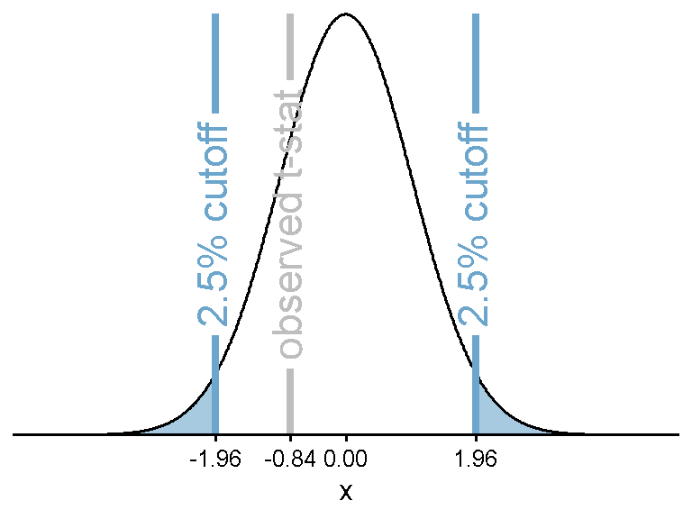
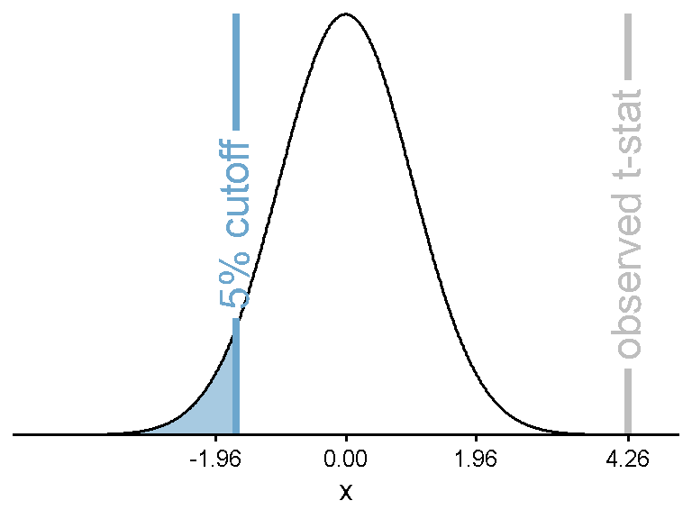
Cohen’s D
Standardized mean difference, interpretable effect size
Derived with two means (represented as \(\mu_1\) and \(\mu_2\)) and standard deviation (\(s\))
\[d = \frac{\mu_1 - \mu_2}{s}\]
For a one-sample t test, \(\mu_1\) would be our sample mean \(\bar{x}\), \(\mu_2\) would be our population mean \(\mu\), and the standard deviation \(\sigma\) would be our observed standard deviation \(s\).
Not a statistical test—just a measure of difference.
Cohen’s D Example
Let’s say a researcher claims the average highway miles per gallon across all cars is 30mpg. We found earlier that the sample had a significant difference between the hypothesized and sample mean. What is the effect size of that difference?
\[d = \frac{\bar{x} - \mu}{s}\]
x_bar <- mean(mpg$hwy)
x_sd <- sd(mpg$hwy)
d <- (x_bar - 30) / x_sd
d[1] -1.101633How would be characterize this difference? What is the direction?
Cohen’s D Strength Visualization
Based on mean (\(\bar{x}\) = round(x_bar, 2) = 23.44) and SD (\(\bar{\sigma}\) = round(x_sd, 2) = 5.95) of cars’ highway MPG (hwy).
Solved backwards for (\(\mu\)) based on different potential levels of d. “What would the hypothesized mean have to have been to get different levels of Cohen’s d?”
\[\bar{x} - d \times s = \mu\]
dat <- data.frame(x = rnorm(100000, x_bar, x_sd))
mu_ex1 <- x_bar - .2 * x_sd
mu_ex2 <- x_bar - .5 * x_sd
mu_ex3 <- x_bar - .8 * x_sdCohen’s D Strength Visualization
“What would the hypothesized mean have to have been to get different levels of Cohen’s d?”
Cohen’s D Strength Visualization
“What would the hypothesized mean have to have been to get different levels of Cohen’s d?”
Warning in geomtextpath::geom_textvline(aes(xintercept = mu_ex1, label = "d = 0.2"), : All aesthetics have length 1, but the data has 100000 rows.
ℹ Please consider using `annotate()` or provide this layer with data containing
a single row.Warning in geomtextpath::geom_textvline(aes(xintercept = mu_ex2, label = "d = 0.5"), : All aesthetics have length 1, but the data has 100000 rows.
ℹ Please consider using `annotate()` or provide this layer with data containing
a single row.Warning in geomtextpath::geom_textvline(aes(xintercept = mu_ex3, label = "d = 0.8"), : All aesthetics have length 1, but the data has 100000 rows.
ℹ Please consider using `annotate()` or provide this layer with data containing
a single row.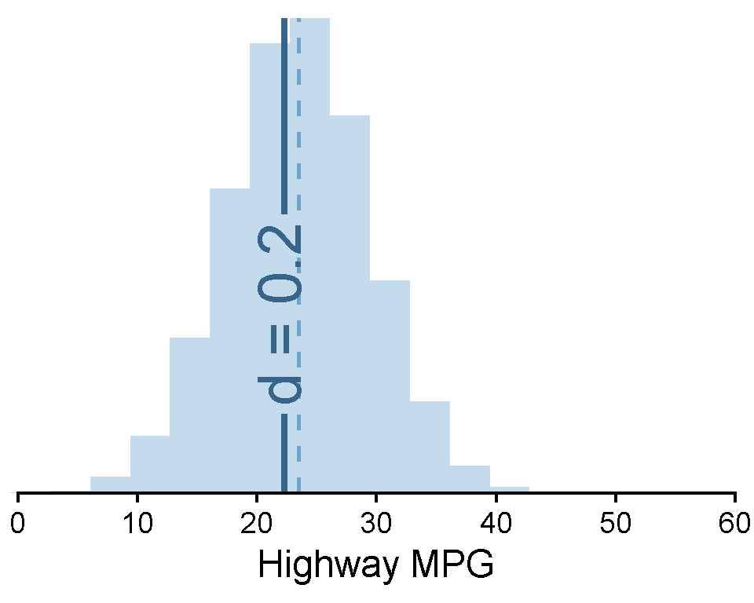
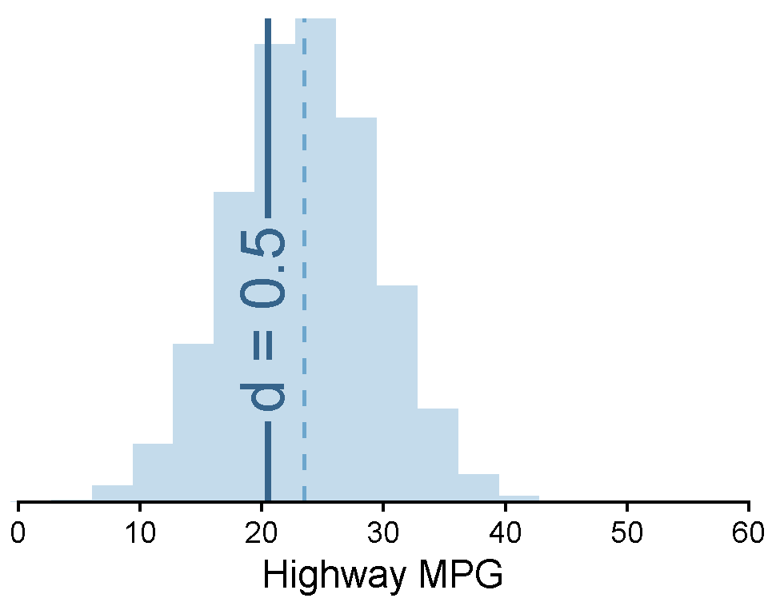
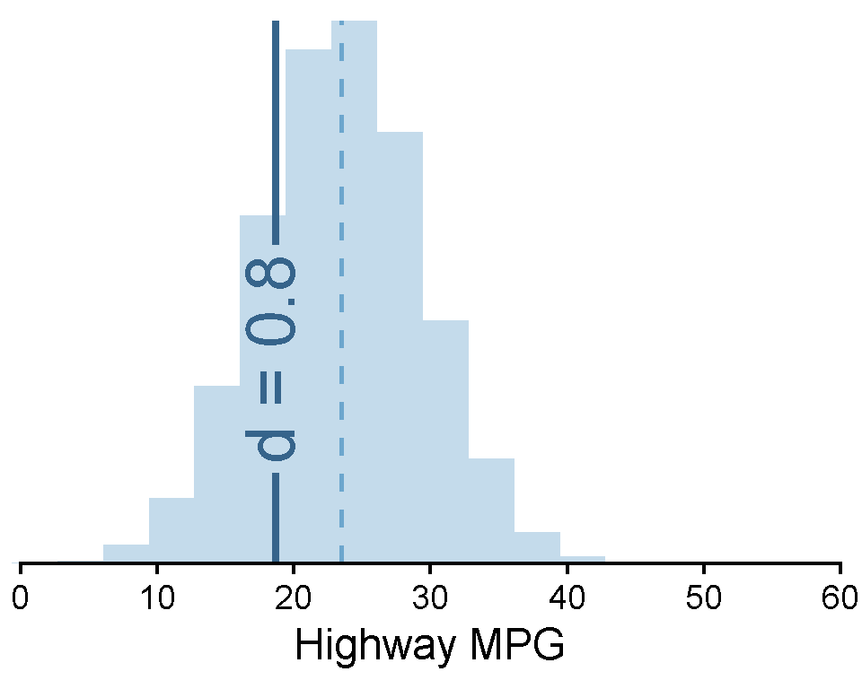
Cohen’s D in R
There are functions for Cohen’s d in R, but they apply more to two samples of means.
○ Instead of one sample and a population mean
For now, simpler to just program it ourselves (x_bar - mu) / x_sd
Two samples will come later!